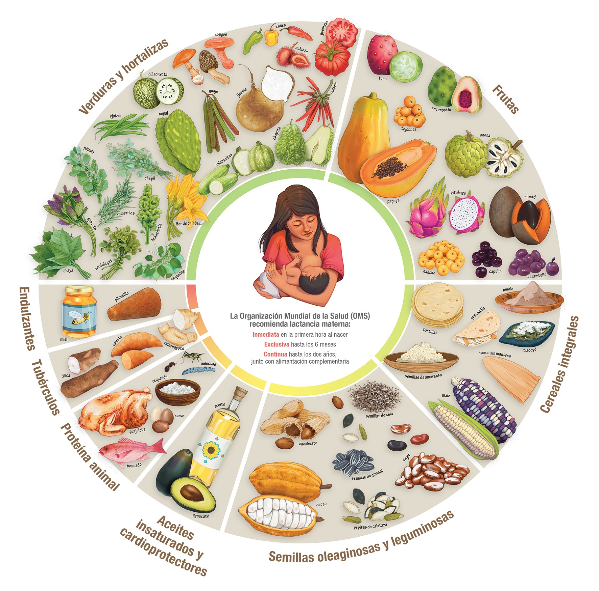

Bienvenido a Xakil
Xakil es una aplicación móvil multiplataforma que te ayuda a mejorar la calidad de tu salud y calidad de vida. Aquí podrás hacer una dieta basada en la dieta de la milpa, recibir atención de un nutriólogo virtual con inteligencia artificial, y encontrar productos de la dieta de la milpa a un precio accesible y cerca de ti mediante GPS. ¡¡Tenemos una dieta para cada alcadia o municipio !!
¿Te preguntarás qué es la dieta de la milpa?
La dieta de la milpa es un patrón alimenticio ancestral basado en ingredientes tradicionales como el maíz, frijol, calabaza y chile. Promueve una alimentación saludable, sostenible y rica en nutrientes esenciales.
